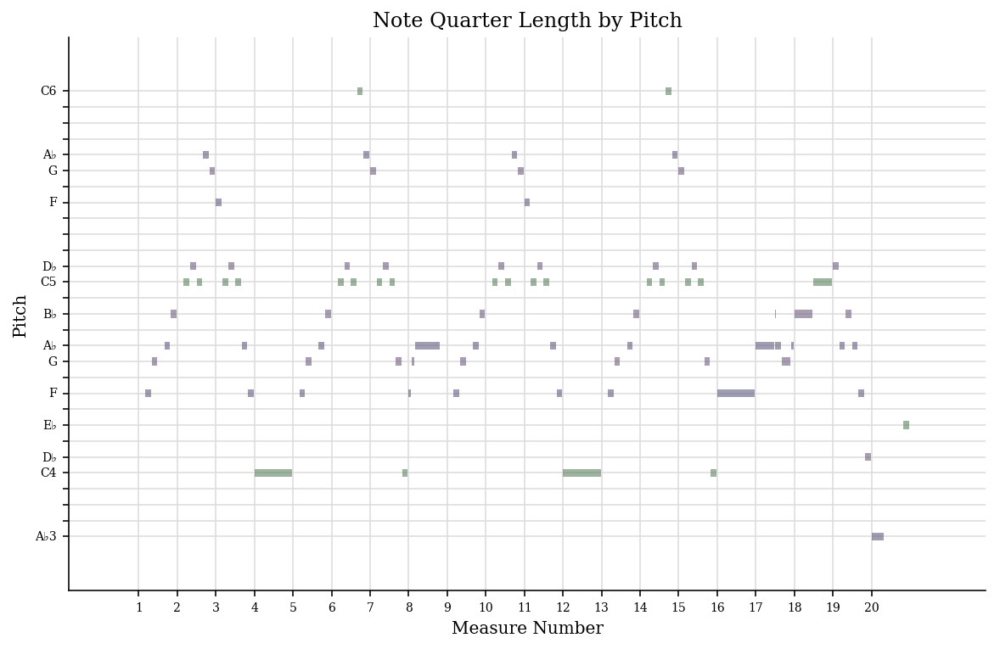

My dataset includes:
Frédéric Chopin, “Etude in F Minor”, Op. 10, No. 9
This piece is really cool. Also, here is a visualization I created using music21

This piece is really cool. Also, here is a visualization I created using music21
This piece is really cool. Also, here is a visualization I created using music21
My dataset is really cool. I have done a lot of work on it. I created an analysis of my three pieces using jSymbolic, which is available here.